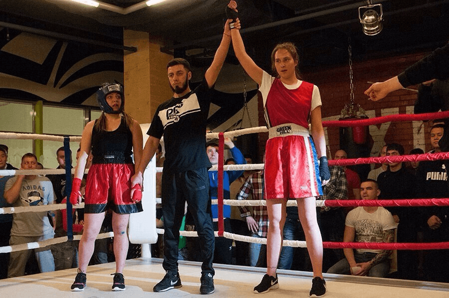
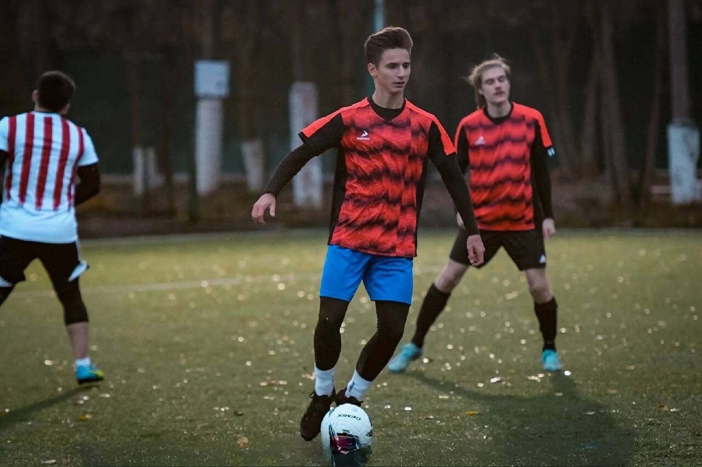
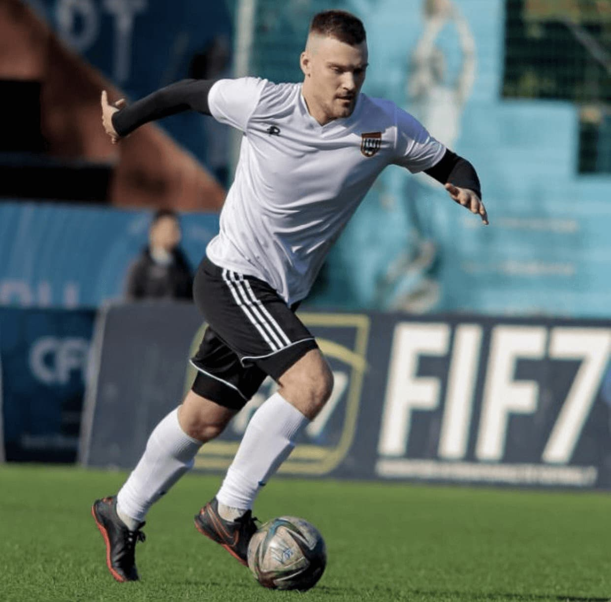
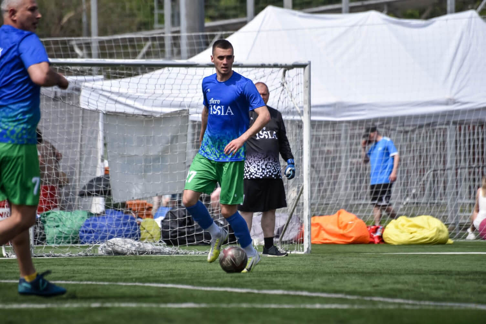

Мне всегда нравились различные виды спорта, но сегодня я расскажу о своей любви к боксу. Будучи еще студенткой, после просмотров боев по ММА я решила, что тоже так хочу. Но для начала я решила, что пойду на классические занятия по боксу, а уже после на смешанные единоборства. Родители были настроены негативно, но спустя некоторое время усердных занятий я начала показывать результаты, полюбила бокс, передумала идти на занятия по ММА и даже начала участвовать в соревнованиях. Вскоре я вышла замуж и забеременела. Занятия пришлось прекратить, да и муж особо не одобрял мою любовь к боксу. После рождения малышки, уже в декрете, я снова вернулась к любимому делу, и никто не стал препятствовать моему решению. Сейчас я вернулась в прежнюю форму и уже снова готовлюсь к соревнованиям. Желаю подписчикам никогда не сомневаться в своих силах, ведь это качество главное не только в спорте, но и в жизни.
Сюжеты и интервью
Что такое "Спорт" и его классификации
В вводном видео Вы узнаёте, что такое Спорт и какие классификации он имеет
турнир «Московская сабля»
В Москве состоялся турнир «Московская сабля». Соревнования прошли при поддержке Департамента спорта города Москвы в год 100-летия Московского спорта
Мотобол
В нашем сюжете мы расскажем как прошёл матч в рамках Чемпионата России Виднонского Металлурга и Краснодарского Агрокомплекса
Студенческий бокс
Открытый чемпионат среди мужчин, студенты из 6 университетов сразились между собой. У них было всего 9 минут, чтобы одержать победу. О результатах и соревнования в нашем сюжете.
Юрий Ноздрунов — бронзовый призёр Паралимпийских игр
Юрий Ноздрунов — бронзовый призёр Паралимпийских игр 2020 в Токио по настольному теннису. О детстве, карьере и своих увлечениях поделился в нашем интервью.
Международная «62-я Большая Московская регата»
4 июня на Гребном канале завершилась международная «62-я Большая Московская регата»
Кирилл Рассказовов, игрок ХК «Витязь»
Смотрите интервью с Кириллом Рассказовым, игрок ХК «Витязь» 22/23
В апреле Кирилл подписал однолетний контракт с ХК «Сочи» В нынешнем сезоне в активе 30-летнего хоккеиста 30 (15+15) очков в 68 играх регулярного чемпионата КХЛ при показателе полезности «+20».
Велосипедная колонна
Единая колонна на велосипедах вдоль главных достопримечательностей Подольска. Именно так подольчане отпраздновали День России-важнейший праздник нашей страны
интервью с игроком Сборной России и Московского Спартака
Ко дню Всемирного дня детского футбола, мы подготовили для Вас интервью с игроком Сборной России и Московского Спартака — Русланом Литвиновым. Руслан рассказал о своём детстве и юношестве, о футболе и других увлечениях. Скорее смотрите, получилось максимально душевное интервью
Алексей Ахтямов - мастер спорта международного класса
Сегодня у нас в гостях Алексей Ахтямов — мастер спорта международного класса, участник летних Паралимпийских игр в Лондоне по легкой атлетике О пути на вершину пьедестала, взлетах и падениях — в нашем новом интервью
Турнир Национальной студенческой футбольной лиги
Лидер команды «Спорт Медиа» побывала в командировке в Санкт-Петербурге, где состоялся 4 дневный турнир Высшего дивизиона Национальной студенческой футбольной лиги
Стимул жизни
У каждого человека есть стимул в жизни. Но что бы у жизни не происходило, нужно помнить про свои ценности. Мы против наркотиков!
Суперкубок России по футболу
15 июля состоялся Суперкубок России по футболу ⚽️
На поле встретились чемпион России петербургский «Зенит» и обладатель кубка России московский ЦСКА.
О том, как прошёл матч, смотрите в нашем сюжете 👍
Конкурсный трек «Делаю» Всероссийского проекта Твой Ход
Мы продолжаем борьбу за победу в конкурсном треке «Делаю» Всероссийского проекта Твой Ход 🚀
Мы работаем над проектом каждый день, чтобы приобщить молодежь к спорту. Рассказываем о его важности, а также с помощью мероприятий развиваем волевые и выносливые качества участников. Снимаем сюжеты о спорте, монтируем большие интервью, выкладываем еженедельные рубрики и проводим мероприятия.
Открытая тренировка хоккейного клуба «Авангард»
Прохлада в середине знойного лета, скрежет коньков и поддержка более 3000 болельщиков🤩
Все это — на первой открытой тренировке хоккейного клуба «Авангард» 🏒
Смотрите наш репортаж прямиком из Омска!👆
Мероприятия
В РЭУ им.Плеханова Софья Масленко провела лекцию по теме «Здоровый образ жизни». Студенты закрепили свои знания на практике и узнали много нового, а физкультминутка подарила им заряд бодрости на целый день.
Ранним утром мы собрали детей 1-6 классов на территории школы 13, провели зарядку и потянулись к солнышку. Зарядились на летний тёплый день.
9-го июня провели эстафету для детей, поиграли в подвижные игры, поговорили о спорте и здоровом образе жизни.
Мы провели для ребят из ЛНР лекцию о спорте. Поговорили о его важности, ребята узнали чуточку больше друг о друге: кто каким спортом занимается/занимался, какие виды спорта им нравятся, как они соблюдают здоровый образ жизни.
Также поговорили о выдающихся личностях в спорте.
После лекции была практическая часть, где мы показали базовые упражнения для зарядки и бодрости на целый день💪
Смех, радость, веселье, ну и конечно, любовь к подвижным играм и спорту объединила всех, кто пришёл в этот день на наше спортивное мероприятие.
Мы танцевали под зажигательные песни, играли в боулинг с мячом, прыгали, как кенгуру и обводили кегли, как футболисты 🏆
Дождь не помеха спортивным играм и веселью. Мы с детьми поговорили о том, насколько важен спорт в жизни детей. Поиграли в футбол, сделали физкультминутку, попрыгали на скакалке, поиграли в эстафеты и просто повеселились.
Спортивные эстафеты и весёлые игры — «Весёлые забавы»! В ходе соревнований участники продемонстрировали свои качества в силе, ловкости, смекалке, быстроте!
Взрослые и дети, а также Молодежь приняли участие в интересных играх и эстафетах. Самая главная мотивация- заряд энергии, бодрости духа и сладкие призы. Заключительная игра была «Цветной парашют». Дети и молодежь были в восторге: бег, угадывание цветов и загадки о спорте. Все это в одной игре. Каждый остался доволен!
«Физкульт-ура!»-спортивно-игровая программа, которую нельзя было пропустить. Ведь это симбиоз веселья, игр и спорта 🏃♀️
Юные спортсмены размялись и разделились на две команды. Выполняя эстафеты, каждая команда набирала очки. Конечно, победила дружба, ребята набрали одинаковое количество баллов. Больше всего юным спортсменам понравилась эстафета, где нужно было из корзинки принести каштаны на чайной ложке и эстафета «Кенгуру» 💪🤸♀️
Каждый участник показал силу и ловкость. Также ребята отгадывали загадки, тем самым показав свои знания о спорте.
Сладкие призы получили все участники🥰 Занимайтесь спортом!
О проекте
«Спорт Медиа» - спортивно-просветительский проект, главная цель которого приобщить молодёжь к здоровому образу жизни, а также сформировать у молодого поколения интерес к спорту, выдающимся личностям в этой сфере, развить волевые и выносливые качества.
Аида Тагиева
SMM-специалист, копирайтер

Софья Масленко
Автор проекта, корреспондент, продюсер съемок
Студенкта факультета журналиситки Участник проекта "Спецкор" Москва Призер конкурса "Мой первый бизнес" Специалист по делам с молодежью в муниципальном учрежденииАксиния Сакович
Монтажер, оператор
Спортивные истории
-
24 годаМосковская область, Подольск
-
19 летТула
С детства люблю футбол. Хожу и смотрю футбол везде. Я занимаюсь футболом уже несколько лет и поиграл во многих командах. Я видел много талантливых ребят, которые сейчас играют в серьезных футбольных академиях России. С некоторыми я играл за одну команду. Из-за проблем со здоровьем я решил не идти в профессиональный спорт. На данный момент я также продолжаю заниматься футболом. Тренировки у нас практически каждый день. Мы играем с командой на разных турнирах в области и столице. Каждый раз я получаю невероятное удовольствие от игрового процесса и новых побед.
-
26 летМосковская область, Подольск
С самого детства я занимаюсь футболом. Закончил школу футбола в 10 классе. Профессиональную карьеру построить не получилось, но я понимал, что не могу не заниматься любимым делом. Поэтому я ушел в любительский лигу. На данный момент моя команда находится на 2 строчке турнирной таблице. Два раза в неделю у нас тренировки. Мы готовимся в следующему сезону. Благодаря футболу я обрел силы и выносливость, мотивацию и любимое занятие. Я верю, что каждый человек может найти вид спорта, который будет любить всей душой.
-
 18 летОмск
18 летОмскПрофессиональный спортсмен, хоккеист. Занимаюсь хоккеем с 4 лет. Начинал в Петрозаводске, затем в 13 лет приехал играть в Подольск в более сильную хоккейную команду. Спустя два года поступило предложение играть в системе Омского Авангарда, которое я, соответственно, принял. В 2021 и 2022 годах я становился чемпионом России в составе юниорских команд до 17 лет. С 2021 года выступаю за молодёжную хоккейную команду «Омские Ястребы », в составе которой становился бронзовым и серебряным призером Молодёжной Хоккейной лиги. Также я вызывался в юношеские сборные команды России U16 и U17. На протяжении всего времени поддерживаю здоровый образ жизни: алкоголь и табак не употребляю.
-
26 летМосковская область, Подольск
Мое главное увлечение — это футбол. Занимаюсь им с 6 лет. На футбол меня привел отец. С первых тренировок я понял, что мне это очень интересно. Около моего дома располагается легендарный стадион Зенит, и, в принципе, все свое детство я провел на нем. Думаю, футбол сыграл ключевую роль в формировании меня как человека и не дал пойти по кривой дороге заниматься всякими глупостями! На данный момент продолжаю заниматься футболом, чтобы держать форму.
Партнеры